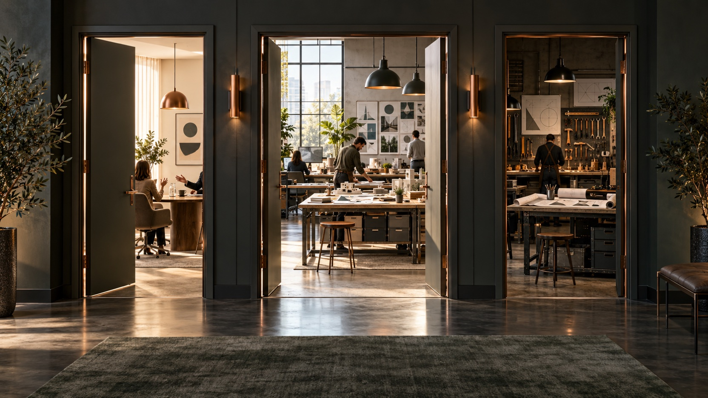
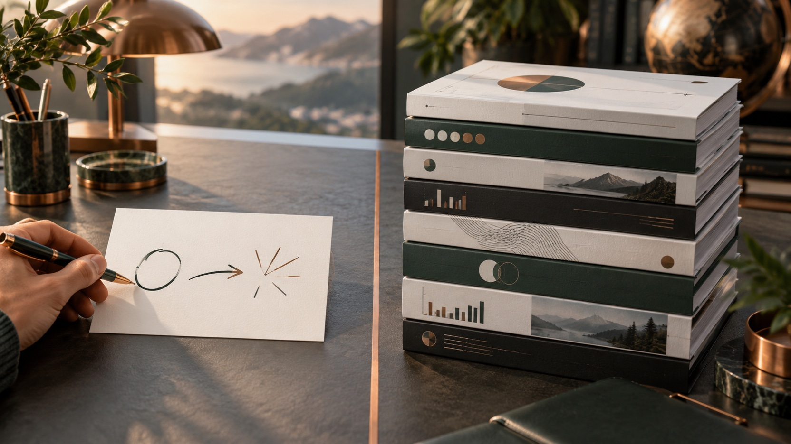
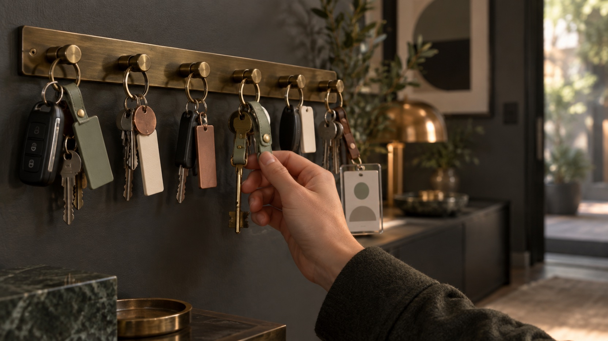
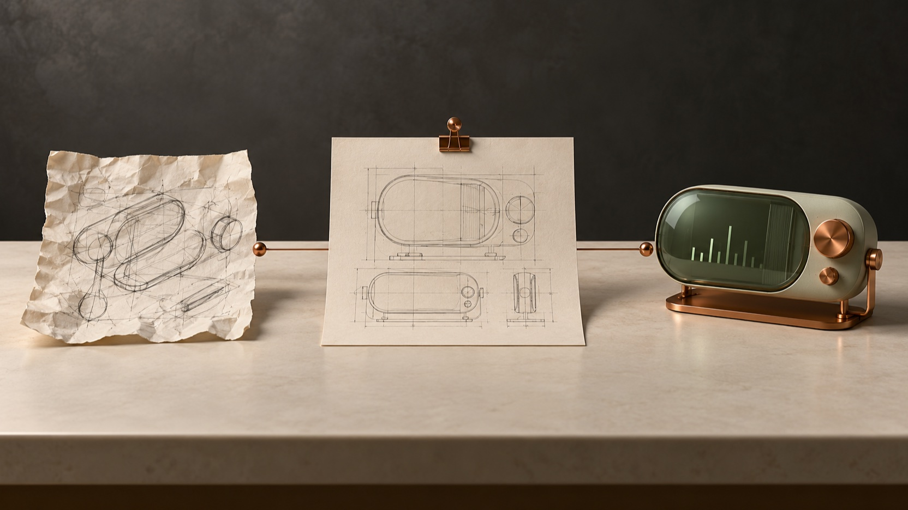
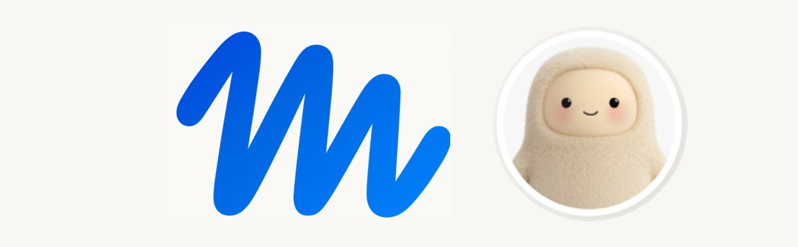
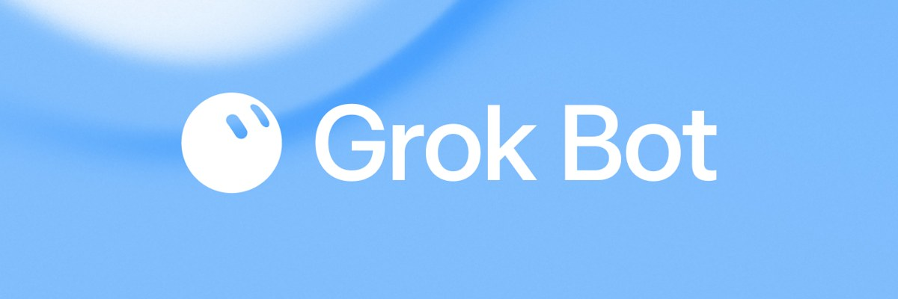

Занятие 4 · онлайн-поток 3 · 17 октября 2026
ChatGPT на полную.
Плюс Canvas.
Чат отвечает. Работа делает.
Canvas собирает приложение.

 ChatGPT1ЧАТ · РАБОТА · CODEX
ChatGPT1ЧАТ · РАБОТА · CODEXОдин ChatGPT.
Три разных режима.
ChatGPT1ЧАТ · РАБОТА · CODEXСпросил и получил ответ. Быстрые вопросы, тексты, разбор одного документа.
Агент для длинной работы в несколько шагов. Доводит до готового файла.
Строит сайты и приложения на вашем компьютере. Целиком на занятии 5.
ChatGPT1ЧАТ · РАБОТА · CODEX
chatgpt.com, вверху страницы переключатель «Чат» / «Работа».
Слева вверху выбираете ChatGPT или Codex. Внутри ChatGPT тот же переключатель.
Режим выбирается в списке вверху экрана.
Чаты обоих режимов лежат в одном списке, есть фильтр.
ChatGPT2ПРОЕКТЫКабинет для одной темы:
файлы и правила в одном месте.
Внутри лежат файлы и правила, и они работают во всех чатах этого проекта. Вы перестаёте объяснять контекст заново.
Два-три главных документа по теме, а не папка на сорок.
Правила: как отвечать и чего не делать. Что в файлах, он прочтёт сам.
Каждый новый чат внутри проекта уже знает всё это.

 ChatGPT3НАВЫКИ
ChatGPT3НАВЫКИМетод, который живёт постоянно
и зовётся одной фразой.
Архив в библиотеке шпаргалки, распаковывать не нужно.
Меню слева «Плагины» → вкладка «Навыки».
«Создать» → «Загрузить с компьютера» → архив.
В режиме «Работа»: @ и первые буквы названия.

ChatGPT4ПЛАГИНЫПропуск в ваши сервисы:
почта, календарь, диск, задачи.
ChatGPT5ЗАПЛАНИРОВАННЫЕ ЗАДАЧИОдин раз объяснили, что и когда.
Дальше приходит само.
ChatGPT6ЗАДАЧА ПО СОБЫТИЮПришло письмо.
Он уже разобрал и подготовил ответ.
 Gemini7CANVAS · GEMINI
Gemini7CANVAS · GEMINIКалькулятор, трекер, квиз для клиента.
Собрали за минуту, поделились ссылкой.
Gemini7CANVAS · GEMINIОписали словами, что вводим, что считаем и что показываем. Через минуту справа работает приложение, им можно поделиться ссылкой.
Калькулятор, трекер, чек-лист для телефона, квиз для клиента, дашборд из таблицы.
Цифры не угадываются: формулы работают на ваших данных.
Отправили ссылку, человек пользуется и может сделать копию под себя.

Gemini7CANVAS · GEMINIgemini.google.com с VPN
«Инструменты» → «Canvas»
из библиотеки или свой
проверили, что не врёт
Gemini7CANVAS · GEMINI OpenAI · ChatGPT
OpenAI · ChatGPTПостоянный агент: цель ставите один раз, дальше он работает сам.

Личный агент, который не отвечает на вопросы, а делает работу.

Команда агентов, которые всегда на связи.